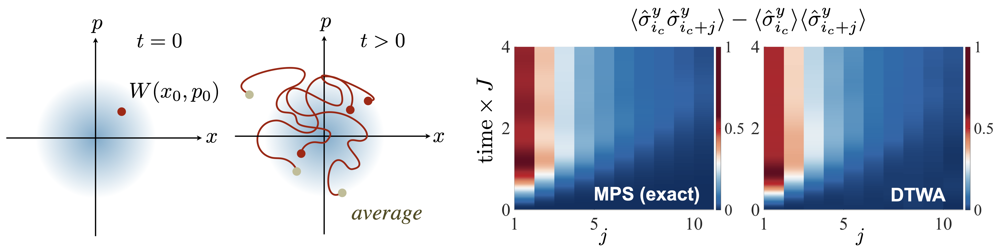
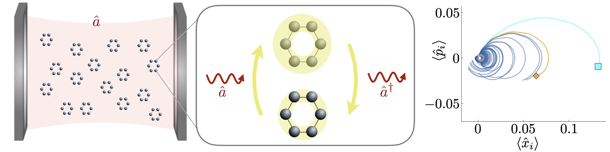
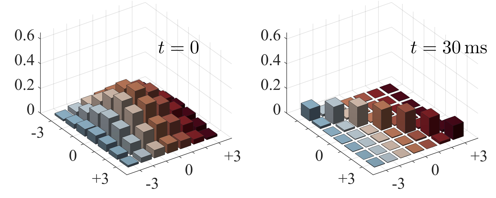

Research interests
The main research interest of my team is the theory of quantum many-body non-equilibrium physics.
We're interested in advancing our fundamental understanding of complex quantum dynamics in large many-body models, by utilizing state-of-the-art
numerical methods and quantum optics tools [e.g.: matrix product states (MPS)/tensor
networks, discrete truncated Wigner approximations (DTWA), quantum trajectories, adiabatic elimination, ...].
Our research not only seeks new insight into fundmantal large-scale quantum theory (e.g. entanglement dynamics),
but also finds applications in various experimental setups in condensed matter, cold atoms, quantum computers, and sometimes even chemistry.
Numerical methods for fundamental quantum many-body theory

[see e.g. Phys. Rev. X 5, 011022 (2015)]
We are interested in developing new types of numerical methods for simulating
and understanding quantum many-body dynamics on classical computers. In quantum mechanics, the Hilbert space
grows exponentially with the number of particles. Remarkably, it
is still not necessarily just the size of the system that makes a quantum evolution hard
to simulate on a classical computer. Rather it is the amount of quantum entanglement in
an evolution that can be linked to the question of "classical simulability".
We are experts in so-called matrix product state (MPS)/tensor network techniques, which is
a numerical approach for simulating quantum many-body evolution on truncated Hilbert spaces
with restricted entanglement. A main recent research focus lies e.g. on finding a better
understanding on how noise limits large-scale entanglement.
In addition we are experts in new types of semi-classical phase
space approaches, e.g. we developed a so-called discrete truncated Wigner approximation. It is based on the
well-known truncated Wigner approximation (TWA), but adapted to discrete many-body
models, utilizing a novel type of sampling of quantum noise from discrete (Wigner) distributions.
Dynamics and disorder in cavity-coupled molecules

[see e.g. Commun Phys 5, 120 (2022)]
A cavity is (typcially) an arrangement of mirrors that fix the boundary
condition for a particular mode of the electromagnetic field (e.g. for an optical or a microwave photon).
If a resonant emitter inside a cavity emitts a photon, it
remains trapped around the emitter. For sufficiently good cavities the emitter and the cavity-mode
then exchange energy more quickly than they can both dissipate it.
Such a scenario is denoted as strong coupling, and in strong coupling
regimes the emitters and the cavity-mode have to be considered as one single entity with
new hybridized modes. Experiments in Strasbourg
(Laboratoire des nanostructures, T. W. Ebbesen)
have pioneered the idea of strongly and collectively coupling transitions in molecular
ensembles to cavities (or other types of resonant modes), and shown that this can lead
to a modification of chemical reactivity or other material properties. We are interested
in exploring many-body dynamics in minimal quantum optics models for systems of
cavity-coupled many-body systems, to shed light on physical mechanisms
behind such experimental observations.
Applications in cold atoms

[see e.g. Nature Communications 10, 1714 (2019)]
Over the past years, technological progress has made it possible to cool atoms
(with lasers) to extremely low temperatures, and to trap them in controllable optical
potentials (in so-called "optical lattices" or "optical tweezers"), e.g. in experiments
in Strasborg (Exotic quantum matter laboratory,
S. Whitlock). We are interested in theoretically modeling dynamics of such systems of "interacting atoms
trapped in crystals of light''. Being well isolated from any type of environment, such setups
allow a controlled experimental observation of (almost) coherent quantum many-body evolution
with interactions. We are interested in utilizing such new setups for studying fundamental
effects in quantum many-body non-equilibrium theory (e.g. entanglement growth,
thermalization and localization, super- and subradiance, synchronization, driven-dissipative
dynamics, time-dependent preparation of strongly-correlated phases of matter, ...) and to
analyze their prospect for future applications in analog and digital
quantum simulation & computation.
|